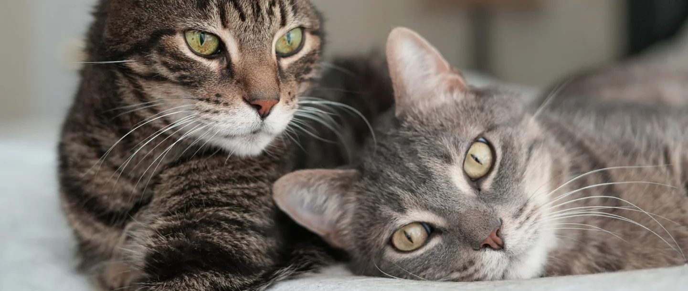

CATS

Cats have very sweet features.
It has two beautiful eyes, adorably tiny paws, sharp claws, and two perky ears which are very sensitive to sounds.
It has a tiny body covered with smooth fur.It is characterized by supple low-slung bodies, finely molded heads,
long tails that aid in balance, and specialized teeth and claws that adapt them admirably to a life of active
hunting